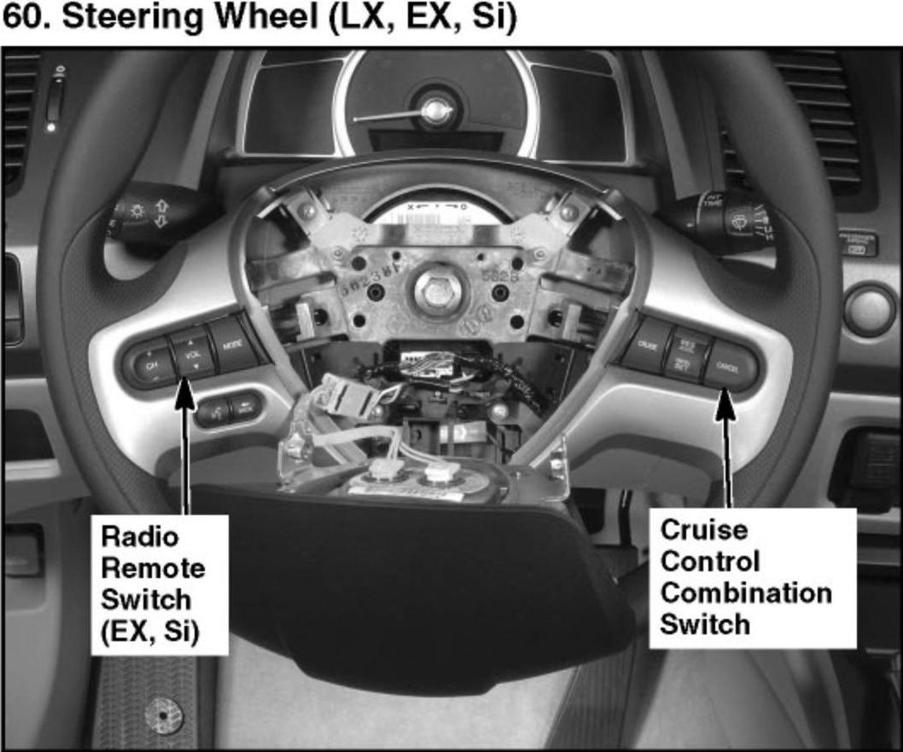
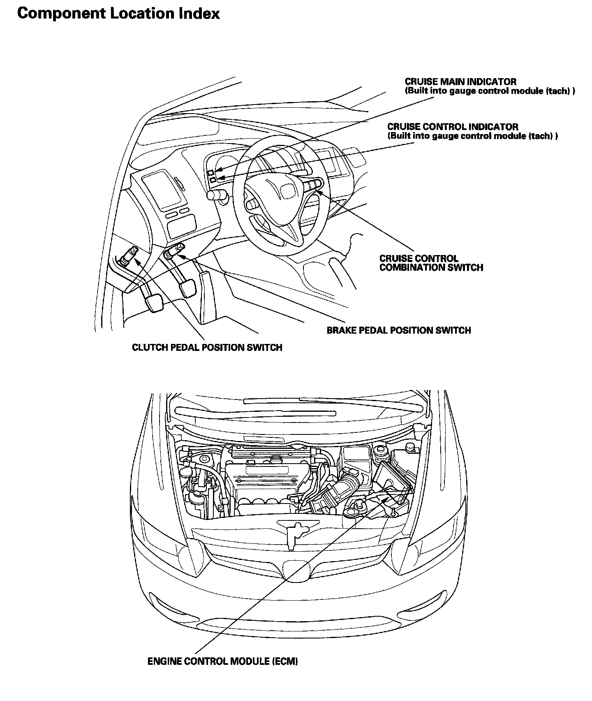

Operation CHARM
: Car repair manuals for everyone.
Home
>>
Honda
>>
2007
>>
Civic Si L4-2.0L
>>
Repair and Diagnosis
>>
Cruise Control
>>
Sensors and Switches - Cruise Control
>>
Cruise Control Switch
>>
Locations
Cruise Control Switch: Locations
60. Steering Wheel (LX, EX, Si):

Cruise Control Component Location Index:
